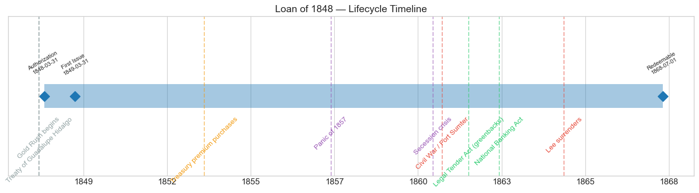
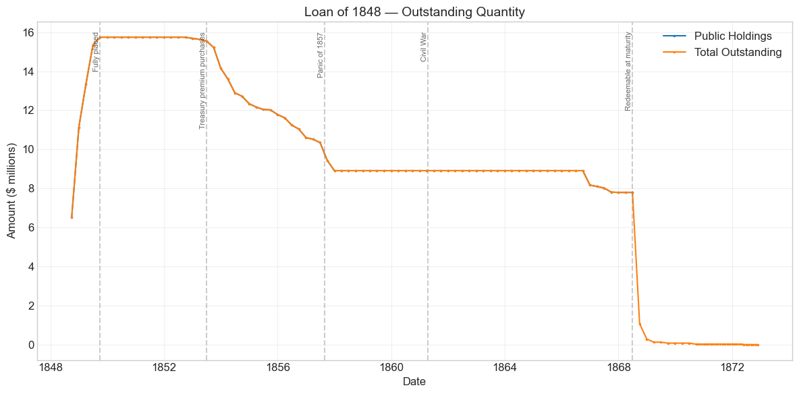
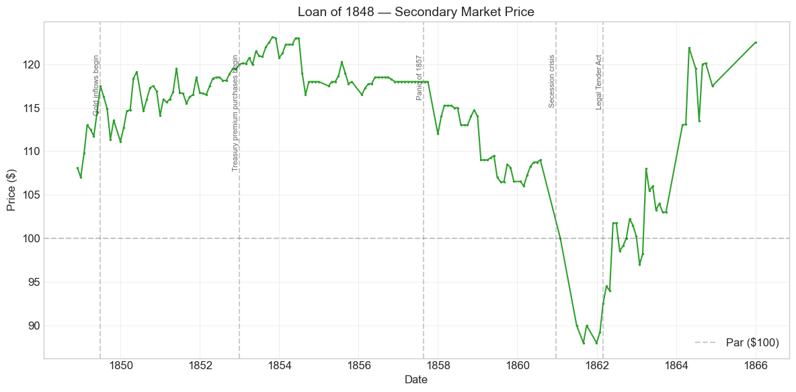
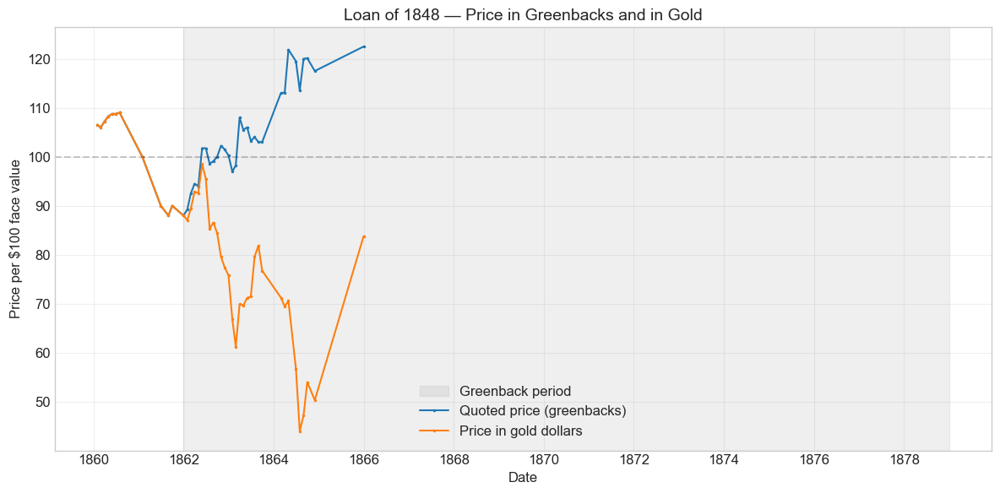
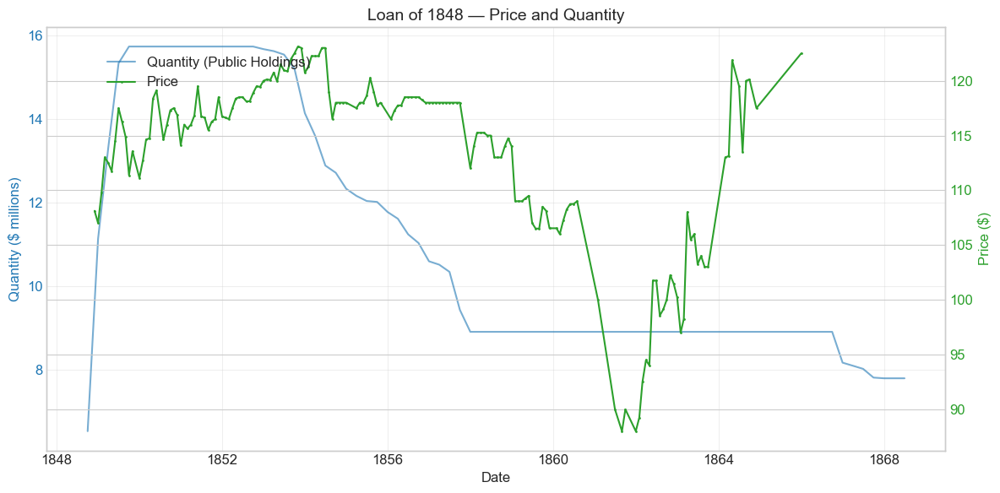
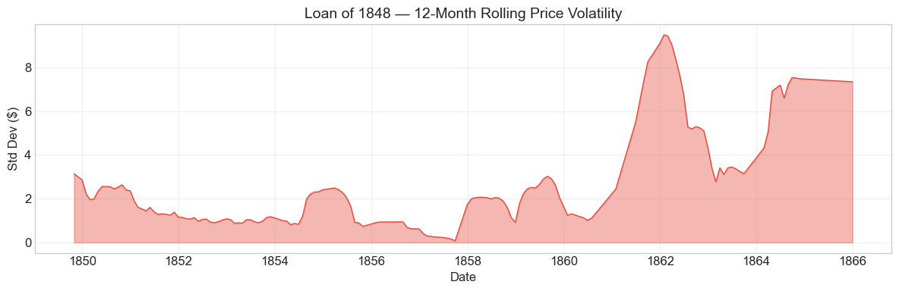

Bond Biography: Loan of 1848#
Overview#
The Loan of 1848 was authorized by the Act of March 31, 1848, which empowered the Treasury to borrow up to $16 million on twenty-year stock bearing 6 per cent interest, payable semi-annually in coin and redeemable after twenty years. During its lifetime on the secondary market, the bond’s average price was $113.46, ranging from $88.00 to $133.56 (based on 168 monthly observations from November 1848 to December 1865). Peak outstanding reached $15.74 million on September 30, 1849 — nearly the full authorization. (The database records a first issue date of March 31, 1849, but the quantity series shows that subscribers had already paid in some $6.5 million by September 1848 and over $11 million by year-end; the stock was subscribed and paid for in installments beginning in mid-1848.)
This was the last of the Mexican War loans, and the first of them floated after the shooting had stopped. The Treaty of Guadalupe Hidalgo was signed on February 2, 1848 and ratifications were exchanged that spring; under its terms the United States acquired the vast Mexican Cession and agreed to pay Mexico $15 million, besides assuming claims of American citizens against Mexico of up to $3¼ million. The war’s bills, however, did not stop with the war: the indemnity installments, the costs of winding down and withdrawing the army, and the floating debt of Treasury notes all had to be funded. Secretary of the Treasury Robert J. Walker asked Congress for one more loan, and the Act of March 31, 1848 — passed the very month the Senate acted on the treaty — supplied it. It is a nice irony of fiscal history that a bond floated to pay for a war was actually floated to pay for peace: a substantial share of the proceeds went, directly or indirectly, toward the payment promised to Mexico.
What makes the Loan of 1848 distinctive in the arc of U.S. fiscal history is not what it financed but how it sold. Six years earlier, in 1842, the Treasury of the same government had been forced to hawk a nearly identical security — a twenty-year 6 per cent coin bond — at a discount, after the great houses of Europe refused to touch American paper at all (see the companion chapter on the Loan of 1842). In June 1848 the same instrument was put up at sealed-bid auction and the bids came in above par: the database records a price sold of 1.03, roughly $103 per $100 of face value. The banking house of Corcoran & Riggs took about $14 million of the $16 million, and Corcoran then placed more than $3 million of the bonds in London — the return of European capital to new U.S. federal debt after the state-default scandal of the early 1840s (Cohen 1971). The credit-restoration story that begins with the humiliation of 1842 ends here, with a young republic that could not borrow a dollar in 1842 selling its bonds at a premium six years later, in the immediate aftermath of a war.
The bond then lived a long and eventful life: through the California gold inflows and the surplus-rich early 1850s, when the Treasury bought back nearly half the issue at prices in the high teens above par; through the Panic of 1857, which ended the buybacks; through the secession winter, which drove the price to 88; through the Civil War, when its coin coupons were quoted in depreciating greenbacks; and finally to redemption at maturity in 1868, paid off on schedule by a government that had meanwhile borrowed sums beyond anything imaginable in 1848.
Historical Context#
The following major events occurred during this bond’s lifetime:
Date |
Event |
Category |
|---|---|---|
1848-02-02 |
Treaty of Guadalupe Hidalgo ends the Mexican War |
Other |
1848-01-24 |
Gold discovered at Sutter’s Mill; California Gold Rush follows |
Other |
1852–1857 |
Treasury premium purchases out of surplus revenue |
Fiscal |
1857-08-24 to 1858-12-31 |
Panic of 1857 |
Crisis |
1860-11 to 1861-04 |
Secession crisis |
Crisis |
1861-04-12 to 1865-04-09 |
Civil War |
War |
1861-04-12 |
Fort Sumter attacked |
Other |
1862-02-25 |
Legal Tender Act (greenbacks) |
Legislation |
1862-07-01 |
Pacific Railway Act |
Legislation |
1863-02-25 |
National Banking Act |
Legislation |
1863-07-01 to 1863-07-03 |
Battle of Gettysburg |
Other |
1864-06-03 |
National Banking Act (revised) |
Legislation |
1865-04-14 |
Lincoln assassinated |
Other |
1868-07-01 |
Bond redeemable; bulk retired in the second half of 1868 |
Other |
A war ends, and its bill arrives#
The Mexican War was financed almost entirely by borrowing — Treasury notes and three funded loans, the 6s of 1846, the $23 million loan of 1847, and this loan of 1848 — rather than by taxes. By early 1848 the fighting was over but the Treasury’s needs were not: the $15 million indemnity to Mexico, the assumed claims, and the expenses of demobilization all lay ahead. The Act of March 31, 1848 authorized the final $16 million. Unlike 1842, and unlike the anxious first war loans of 1846–47, the placement was a triumph. Federal revenue was recovering strongly under the Walker Tariff, the war had ended in a swift and (for the victor) inexpensive peace, and the market had absorbed each of the earlier war loans at improving prices. When the bids were opened in June 1848 the loan was awarded above par — about 103 — with Corcoran & Riggs of Washington, which had taken most of the public offering of the 1847 loan, taking about $14 million of the issue (Cohen 1971, pp. 49–51).
Gold, surpluses, and the buyback decade#
Within a year of the loan’s placement, gold from California began to pour into the Atlantic economy. The 1850s brought the federal government swollen customs revenues and persistent surpluses — the mirror image of the deficit years that had produced the loan. With no debt maturing and the sinking-fund instinct strong, Secretaries Thomas Corwin and, especially, James Guthrie used the surpluses to buy government bonds in the open market at substantial premiums, both to reduce the debt and to return idle Treasury cash to the money market. The quantity series below shows the result for this bond: from late 1852 through the end of 1857 the outstanding balance fell from $15.74 million to $8.91 million — some $6.8 million, over 40 per cent of the issue, repurchased at prices that the price series shows ran between roughly 112 and 123. The government was paying a fifth again over face value to retire its own 6s; contemporaries debated the arithmetic, but the purchases were the era’s chosen instrument of debt reduction.
The Panic of 1857#
The Panic of August 1857 ended the buybacks almost overnight. Imports and customs revenue collapsed, the surplus vanished, and the Treasury of 1858–60 went back to borrowing. The bond’s balance froze at $8.91 million — where it would remain, untouched, for nearly a decade — and its price stepped down from the long 118 plateau of 1856–57 to 112–115 in 1858 and to 106–109 by 1859–60. The step down reflects less any doubt about this bond than a general cheapening of government credit: a Treasury that had been retiring debt at 118 was now issuing new loans, and yields adjusted accordingly.
Secession and Civil War#
The election of 1860 and the secession winter did what no event since 1842 had done: they pushed a United States 6 per cent coin bond below par. The bond touched 100 in January 1861 and fell to 88–90 through the terrible summer and autumn of 1861, as the scale and cost of the war became clear and the banks and Treasury suspended specie payments at year-end. From early 1862 the quotations must be read with care: after the Legal Tender Act (February 25, 1862) the New York market quoted bonds in depreciating paper greenbacks, so the recovery from 89 in January 1862 to par by the autumn, and the paper prices of 113–122 in 1864–65, conflate genuine improvement in Union credit with the falling value of the unit of quotation. In gold terms, a paper price of 120 in mid-1864 — when gold commanded a large premium over greenbacks — represented a substantial discount. We flag rather than decompose this; the direction of both forces is clear even where their shares are not.
Redemption in 1868#
The bond became redeemable after July 1, 1868, twenty years from issue. Apart from modest repurchases in 1866–67 as the postwar Treasury began reducing the war debt, the principal was paid off promptly at maturity: the ledger shows $7.8 million outstanding in mid-1868 falling to about $1.1 million by September and $289,000 by December. Trivial residual balances — certificates never presented for payment, a common tail in nineteenth-century loan accounts — linger in the books into the early 1870s, dwindling to $5,500. Like the Loan of 1842, redeemed on schedule in 1863 in the middle of the war, the Loan of 1848 was honored to the letter and on time.
# Bond Lifecycle Timeline
fig, ax = plt.subplots(figsize=(14, 4))
# Key dates
dates = [('Authorization', '1848-03-31'), ('First Issue', '1849-03-31'), ('Redeemable', '1868-07-01')]
events = [('Treaty of Guadalupe Hidalgo', '1848-02-02', 'other'), ('Gold Rush begins', '1848-01-24', 'other'), ('Treasury premium purchases', '1853-06-30', 'monetary'), ('Panic of 1857', '1857-08-24', 'crisis'), ('Secession crisis', '1860-12-20', 'crisis'), ('Civil War / Fort Sumter', '1861-04-12', 'war'), ('Legal Tender Act (greenbacks)', '1862-02-25', 'legislation'), ('National Banking Act', '1863-02-25', 'legislation'), ('Lee surrenders', '1865-04-09', 'war')]
import matplotlib.dates as mdates
from datetime import datetime
# Plot bond lifetime bar
d0 = datetime.strptime(dates[0][1], '%Y-%m-%d')
d1 = datetime.strptime(dates[-1][1], '%Y-%m-%d')
ax.barh(0, (d1 - d0).days, left=mdates.date2num(d0), height=0.3,
color='#1f77b4', alpha=0.4, label='Bond Lifetime')
# Mark key dates
for label, date_str in dates:
d = datetime.strptime(date_str, '%Y-%m-%d')
ax.plot(mdates.date2num(d), 0, 'D', color='#1f77b4', markersize=10)
ax.annotate(f'{label}\n{date_str}', (mdates.date2num(d), 0.25),
ha='center', va='bottom', fontsize=8, rotation=30)
# Mark historical events
colors = {'war': '#e74c3c', 'crisis': '#9b59b6', 'legislation': '#2ecc71', 'other': '#95a5a6', 'monetary': '#f39c12'}
for name, date_str, cat in events:
d = datetime.strptime(date_str, '%Y-%m-%d')
ax.axvline(mdates.date2num(d), color=colors.get(cat, 'gray'), alpha=0.5, linestyle='--')
ax.annotate(name, (mdates.date2num(d), -0.25), ha='center', va='top',
fontsize=10, rotation=45, color=colors.get(cat, 'gray'))
ax.set_yticks([])
ax.xaxis.set_major_formatter(mdates.DateFormatter('%Y'))
ax.set_title('Loan of 1848 — Lifecycle Timeline')
ax.set_ylim(-1, 1)
plt.tight_layout()
plt.show()

Bond Features#
Feature |
Detail |
|---|---|
Name |
Loan of 1848 |
Authorizing Act |
March 31, 1848 (up to $16 million) |
First Issue Date |
March 31, 1849 (subscriptions paid in from mid-1848) |
Term |
20 years |
Redeemable After |
July 1, 1868 |
Coupon Rate |
6.0% |
Payment Frequency |
Semi-annual |
Callable |
No |
Payable in Coin |
Yes |
Amount Placed |
~$15.74 million (peak outstanding, September 1849) |
Price Sold |
1.03 (about $103 per $100 of face value) |
Two features deserve emphasis. First, the terms are essentially identical to the Loan of 1842 — a twenty-year, non-callable, 6 per cent coin bond with semi-annual coupons. That makes the pair a controlled experiment in the price of reputation: the same government, offering the same security, was forced to sell below par in 1842 (97½ in the database; about 99.5 on Bayley’s cash figures) and was paid about 103 in 1848. Second, the premium sale itself. Selling a war loan above par was, for the United States of this era, an extraordinary event — the war loans of 1812–14 had gone off at deep discounts, and even the loan of 1846 had struggled at par. The 3 per cent premium of 1848 recorded, in a single number, the recovery of federal revenue, the profitable end of the war, and the market’s accumulated confidence in a government that had never missed a payment on its own debt.
# Display full bond features from database
row = BondList.loc[20090]
display_cols = [
"Treasury's Name Of Issue", 'Authorizing Act', 'Term Of Loan',
'First Issue Date', 'First Redemption Date', 'Final Redemption Date',
'Coupon Rate', 'Coupons Per Year', 'Callable', 'Coin',
'Authorized Amount', 'Price Sold'
]
print('Bond Features from Database:')
print('=' * 55)
for col in display_cols:
if col in row.index:
print(f' {col:<30} {row[col]}')
Bond Features from Database:
=======================================================
Treasury's Name Of Issue Loan of 1848
Authorizing Act March 31, 1848
Term Of Loan 20 years
First Issue Date 1849-03-31 00:00:00
First Redemption Date NaT
Final Redemption Date NaT
Coupon Rate 6.0
Coupons Per Year 2.0
Callable 0.0
Coin 1.0
Authorized Amount nan
Price Sold 1.03
Bond Quantity Over Time#
The bond’s outstanding quantity peaked at $15.74 million on September 30, 1849. The quarterly ledger runs from September 30, 1848 through the redemption of 1868 and on to the last unpresented residuals of the early 1870s.
# Bond quantity over time
fig, ax = plt.subplots(figsize=(12, 6))
for stype in ['Public Holdings', 'Total Outstanding']:
try:
s = BondQuant_T.loc[(20090, stype)]
s = s[s.notna()]
if len(s) > 0:
ax.plot(s.index, s.values / 1e6, marker='.', markersize=3, linewidth=1.5, label=stype)
except KeyError:
pass
ax.set_title('Loan of 1848 — Outstanding Quantity')
ax.set_xlabel('Date')
ax.set_ylabel('Amount ($ millions)')
ax.legend()
ax.grid(True, alpha=0.3)
events = {'1849-09-30': 'Fully placed', '1853-06-30': 'Treasury premium purchases', '1857-08-24': 'Panic of 1857', '1861-04-12': 'Civil War', '1868-07-01': 'Redeemable at maturity'}
for date_str, label in events.items():
d = pd.Timestamp(date_str)
ax.axvline(d, color='gray', alpha=0.4, linestyle='--')
ax.text(d, ax.get_ylim()[1]*0.97, label, rotation=90, va='top', ha='right', fontsize=8, alpha=0.7)
plt.tight_layout()
plt.show()

Quantity Analysis#
The quantity series tells the loan’s story in five movements — and the contrast with the crawling placement of 1842 could not be sharper.
Rapid placement (1848–49). Where the Loan of 1842 took the better part of a year to place $8.3 million at a discount, the Loan of 1848 shows $6.5 million paid in by September 1848, $11.1 million by December, and the full $15.74 million by September 1849 — all at a premium. Subscribers paid in installments as the Treasury called for the money, which is why the balance climbs in steps rather than appearing at once.
The plateau (1850–52). The full amount then sat untouched for three years, the government’s finances turning from deficit to surplus as gold-swollen trade lifted customs receipts.
Premium purchases out of surplus (1852–57). From the last quarter of 1852 the balance falls steadily: to $14.1 million by the end of 1853, $12.3 million by the end of 1854, $10.6 million by the end of 1856, and $8.91 million by the end of 1857. This is the Corwin–Guthrie buyback program at work: roughly $6.8 million of the issue — over 40 per cent — repurchased in the open market at prices between about 112 and 123. The purchases stop abruptly with the Panic of 1857, which destroyed the surplus that funded them.
The long freeze (1858–1866). The balance then sits at exactly $8,908,341.80 for nine years, through the secession crisis and the entire Civil War. A wartime Treasury borrowing hundreds of millions through five-twenties and legal-tender notes had no cash to spare for retiring a bond that was not yet redeemable; the old 6s of 1848 simply rode out the war in their holders’ strongboxes.
Redemption at maturity (1868). Modest repurchases in 1866–67 (about $1.1 million, as the postwar Treasury under Hugh McCulloch began paring the debt) brought the balance to $7.8 million by the time the bond became redeemable on July 1, 1868. The principal was then paid off promptly: $1.07 million remained by September 1868 and $289,000 by December. The small residuals that linger into the early 1870s — ultimately a mere $5,500 — are certificates never presented for payment, a routine tail in nineteenth-century loan accounts, not a default.
Secondary Market Prices#
Overall Statistics (1848-11-30 to 1865-12-31): Mean $113.46, Range $88.00–$133.56, Std Dev $8.00, 168 observations.
By Period:
Period |
Approx. Range |
Character |
|---|---|---|
1848–1849 |
107–117½ |
Immediate premium; the loan never traded below 107 in its first year |
1850–1853 |
111–123⅛ |
Gold-era climb; peak of 123⅛ in October 1853 |
1854–1857 |
~116–123, flattening to a constant 118 |
Premium plateau; buybacks thin the float, quotations increasingly nominal |
1858–1860 |
106–115¼ |
Post-panic step down; one anomalous print of 133.56 (Dec 1859) |
1861 |
88–100 |
Secession and war sag; below par for the first time in the bond’s life |
1862–1865 |
89–122½ (in greenbacks) |
Paper-currency quotations; nominal recovery conflates credit and currency |
The very first quotation in the database — 108⅛ in November 1848 — already tells most of the story: this bond began its market life eight points above par and stayed above par continuously for over twelve years, until the secession crisis. Note two warnings for readers of the chart below. First, the price sits at exactly $118.00 for nine consecutive months in 1857 while the Treasury’s buybacks were shrinking the float; quotations in such stretches look like dealers’ standing quotes rather than fresh transactions. Second, the single print of $133.56 in December 1859, more than 25 points above its neighbors on either side, is almost certainly an anomalous or misattributed quotation rather than a genuine market move — no historical event remotely justifies it, and the price returns to 106½ the following month. The price charts omit the print.
# Annotated price chart
fig, ax = plt.subplots(figsize=(12, 6))
s = BondPrice_T.loc[(20090, 'Average')]
s = pd.to_numeric(s, errors='coerce').dropna()
if len(s) > 0:
ax.plot(s.index, s.values, marker='.', markersize=3, linewidth=1.5, color='#2ca02c')
ax.axhline(100, color='black', alpha=0.2, linestyle='--', label='Par ($100)')
ax.set_title('Loan of 1848 — Secondary Market Price')
ax.set_xlabel('Date')
ax.set_ylabel('Price ($)')
ax.legend()
ax.grid(True, alpha=0.3)
events = {'1849-06-30': 'Gold inflows begin', '1852-12-31': 'Treasury premium purchases begin', '1857-08-24': 'Panic of 1857', '1860-12-20': 'Secession crisis', '1862-02-25': 'Legal Tender Act'}
for date_str, label in events.items():
d = pd.Timestamp(date_str)
ax.axvline(d, color='gray', alpha=0.4, linestyle='--')
ax.text(d, ax.get_ylim()[1]*0.97, label, rotation=90, va='top', ha='right', fontsize=8, alpha=0.7)
plt.tight_layout()
plt.show()

Prices in greenbacks and in gold#
From January 1862 to December 1878 the database quotes this bond in greenbacks, while its coupons were paid in coin. A greenback price therefore moves with the gold premium as well as with the bond’s credit. The chart below divides each greenback price by the greenback price of $100 in gold, which restates the quotation in gold dollars. Before 1862 and after 1878 the two units coincide.
# Price in greenbacks and in gold units, 1860-1880
gold = pd.read_csv('../data/gold_price_greenbacks_1862_1878.csv', comment='#', parse_dates=['date']).set_index('date')['gold_price_greenbacks']
p = pd.to_numeric(BondPrice_T.loc[(20090, 'Average')], errors='coerce').dropna()
p = p.loc['1860-01-01':'1880-12-31']
g = gold.reindex(p.index)
g[(p.index < pd.Timestamp('1862-01-01')) | (p.index > pd.Timestamp('1878-12-31'))] = 100.0
p_gold = p / (g / 100.0)
fig, ax = plt.subplots(figsize=(12, 6))
ax.axvspan(pd.Timestamp('1862-01-01'), pd.Timestamp('1878-12-31'), color='gray', alpha=0.12, label='Greenback period')
ax.plot(p.index, p.values, marker='.', markersize=3, linewidth=1.5, label='Quoted price (greenbacks)')
ax.plot(p_gold.index, p_gold.values, marker='.', markersize=3, linewidth=1.5, label='Price in gold dollars')
ax.axhline(100, color='black', alpha=0.2, linestyle='--')
ax.set_title('Loan of 1848 — Price in Greenbacks and in Gold')
ax.set_xlabel('Date')
ax.set_ylabel('Price per \\$100 face value')
ax.legend()
ax.grid(True, alpha=0.3)
plt.tight_layout()
plt.show()

# Price and Quantity — dual-axis chart
fig, ax1 = plt.subplots(figsize=(12, 6))
# Quantity (left axis)
for stype in ['Public Holdings', 'Total Outstanding']:
try:
q = BondQuant_T.loc[(20090, stype)]
q = q[q.notna()]
if len(q) > 0:
ax1.plot(q.index, q.values / 1e6, color='#1f77b4', alpha=0.6, label=f'Quantity ({stype})')
break
except KeyError:
pass
ax1.set_xlabel('Date')
ax1.set_ylabel('Quantity ($ millions)', color='#1f77b4')
ax1.tick_params(axis='y', labelcolor='#1f77b4')
# Price (right axis)
ax2 = ax1.twinx()
p = BondPrice_T.loc[(20090, 'Average')]
p = pd.to_numeric(p, errors='coerce').dropna()
if len(p) > 0:
ax2.plot(p.index, p.values, color='#2ca02c', marker='.', markersize=2, label='Price')
ax2.set_ylabel('Price ($)', color='#2ca02c')
ax2.tick_params(axis='y', labelcolor='#2ca02c')
ax1.set_title('Loan of 1848 — Price and Quantity')
ax1.grid(True, alpha=0.3)
fig.legend(loc='upper left', bbox_to_anchor=(0.1, 0.9))
plt.tight_layout()
plt.show()

Detected Price/Quantity Events#
The following significant movements were auto-detected in the data, with causal interpretation:
Date |
Type |
Change |
Interpretation |
|---|---|---|---|
1848-12 |
quantity increase |
+70.5% |
Not a market event: subscribers paying in their installments on a loan that, unlike 1842, the market was eager to take. The balance rose from $6.5M to $11.1M in a single quarter. |
1857-12 |
price drop |
-5.1% |
(follows a data gap) Panic of 1857. Quotations vanish for two months after September 1857 and the bond reappears at 112 — a step down from the long 118 plateau as the panic ended the Treasury surplus (and the buybacks it funded) and pushed the government back toward borrowing. |
1859-12 |
price spike |
+25.4% |
(data defect) Data artifact. The December 1859 print of 133.56 sits between quotations of 106½ on either side. No news in December 1859 could move a seasoned 6 per cent bond by a quarter of its value for one month; this is almost certainly an erroneous or misattributed quotation and should not be read as a market event. |
1860-01 |
price drop |
-20.2% |
(data defect) The mirror image of the above: the series simply returns to its true level of about 106½. |
1861-01 |
price drop |
-8.3% |
(follows a data gap) Secession. South Carolina seceded in December 1860 and six more states followed within weeks; the bond fell to exactly par — its first touch of 100 since issue. |
1861-06 |
price drop |
-10.0% |
(follows a data gap) War in earnest. After Fort Sumter (April 12) the market confronted the cost of a real war; the bond fell to 90, and to 88 by August, its all-time low. |
1862-05 |
price spike |
+8.2% |
Recovery in Union credit after early-1862 victories (Forts Henry and Donelson, New Orleans), amplified by a new fact: since the Legal Tender Act (February 1862), quotations were in greenbacks, so paper prices now rose whenever the currency cheapened. The proximity of the Pacific Railway Act (July) is coincidental. |
1863-03 |
price spike |
+9.9% |
Chiefly currency, partly credit: gold rose sharply against greenbacks in early 1863, lifting the paper price of coin bonds. The coincidence with the National Banking Act (February 25) is one of dates, not causation. |
1864-02 |
price spike |
+9.7% |
Greenback depreciation accelerating in the winter and spring of 1864; the paper price of this coin bond rose toward 122 even as its gold value fell. |
1864-04 |
price spike |
+7.7% |
Continuation of the same currency movement; not attributable to the revised National Banking Act (June). |
A general caution: from 1854 onward the quotations grow increasingly thin — long stretches at identical prices, multi-month gaps (late 1857, most of 1860–61, much of 1864–65) — as the Treasury’s buybacks and then wartime hoarding shrank the tradeable float. Movements and non-movements in these stretches should be read as sparse dealer quotes, not as a continuously traded market, and the wartime observations are in depreciating paper currency throughout.
Price Volatility#
Maximum drawdown: -28.5% (from the peak of $123⅛ in October 1853 to the trough of $88.00 on August 31, 1861, omitting the December 1859 print; with that print included, the figure would be -34.1%)
Average monthly return: 0.131%
The drawdown, measured from the bond’s genuine peak of $123⅛ in October 1853 to the $88.00 trough of August and December 1861, unfolded over eight years in three steps: the gentle easing of the mid-1850s, the post-panic step down of 1857–59, and the secession collapse of 1860–61. As with the Loan of 1842, the worst moment of this bond’s life came when the survival of the issuer itself was in question; and as with that bond, the floor (88, against 95 for the shorter-dated 1842 loan) still priced eventual payment in coin as far more likely than not.
The chart below shows the 12-month rolling standard deviation of prices. The visible peaks come in the placement and gold-rush years of 1848–50, the post-1857 adjustment, and above all in 1860–62; the eerily quiet stretch of 1856–57 partly reflects genuine stability and partly the nominal, standing quotations of a thinning market. The elevated volatility of 1862–65 is substantially a property of the greenback, not of the bond.
# Rolling volatility (12-month window)
p = BondPrice_T.loc[(20090, 'Average')]
p = pd.to_numeric(p, errors='coerce').dropna()
if len(p) >= 12:
rolling_std = p.rolling(window=12).std().dropna()
fig, ax = plt.subplots(figsize=(12, 4))
ax.fill_between(rolling_std.index, rolling_std.values, alpha=0.4, color='#e74c3c')
ax.plot(rolling_std.index, rolling_std.values, color='#e74c3c', linewidth=1)
ax.set_title('Loan of 1848 — 12-Month Rolling Price Volatility')
ax.set_xlabel('Date')
ax.set_ylabel('Std Dev ($)')
ax.grid(True, alpha=0.3)
plt.tight_layout()
plt.show()
else:
print('Insufficient data for rolling volatility (need >= 12 observations)')

Issuance, Distribution, and Redemption#
The bond was originally sold at about 103 (recorded in the database as 1.03 per $1 of face value).
How it was sold. The Treasury invited sealed bids, and when they were opened in June 1848 the offers ran above par. The dominant bidder was Corcoran & Riggs, the Washington banking house of William W. Corcoran and George W. Riggs, which had already taken most of the public offering of the 1847 loan. The firm took about $14 million of the $16 million (Cohen 1971, pp. 49–51).
The London placement. Corcoran had sold the 1847 loan almost entirely in the United States. When the domestic market sagged in the slump of 1848, Secretary Walker advanced him $5 million of Treasury funds to support the price and formally made him a government agent, and Corcoran carried the 1848 loan to Europe (Cohen 1971, pp. 54–55). Baring Brothers, George Peabody & Co., and the Morgans first told him the bonds could not be sold abroad and tried to dissuade him. He went anyway. The London tranche — “more than $3 million,” roughly a fifth of the loan, with some more placed in Paris — was syndicated across six houses: Baring Brothers, George Peabody & Co., Overend, Gurney & Co., Denison & Co., Samuel Jones Loyd, and James Morrison (Cohen 1971, pp. 54–58). The London sale itself roughly broke even once exchange was reckoned. The profit came at home, where news of the London placement restored confidence and let Corcoran sell his remaining stock at a premium (Goldstein 1998). Baring became a cooperative partner only afterward: “the demand for United States stock runs away with all we have or wish to sell,” it wrote him in 1849 (Cohen 1971, p. 57). Philip Hone wrote that Corcoran & Riggs had “made a princely fortune by taking the whole of the last government six per cent loan.” The episode made Corcoran’s fortune and his reputation; the gallery of art he later endowed in Washington was built, in part, on the profits of the 6s of 1847 and 1848.
How it lived. Once distributed, the stock settled into the portfolios of banks, trustees, insurance companies, and foreign holders as a premium investment — semi-annual coin coupons, a long maturity, and an issuer whose credit was now beyond serious question. Through the 1850s its largest single buyer was the United States Treasury itself, which retired over 40 per cent of the issue at prices up to the low 120s out of surplus revenue.
How it ended. The $7.8 million still outstanding when the bond became redeemable on July 1, 1868 was paid off within months, in coin, by a government that had just emerged from the most expensive war in its history and was already engaged in the great postwar refunding debates. Redemption at par of a bond long held at a premium was simply the contract fulfilled; the small residue of never-presented certificates dwindled to $5,500 by 1872.
Implications and Legacy#
The Loan of 1848 is the quiet triumph of antebellum federal finance — a bond whose significance lies precisely in how uneventful its birth was.
It completed the restoration of American credit. The arc that begins with the Loan of 1842 — a 6 per cent coin bond forced out below par after Europe’s bankers refused it — closes here, with the identical security commanding a premium at open auction six years later and selling in London within months. No pair of issues in the database better brackets the speed with which a sovereign’s reputation, once lost, could be rebuilt by revenue, victory, and punctual payment.
It showed that the United States could finance a war cheaply. The Mexican War was fought almost entirely on borrowed money, and the government’s borrowing terms improved as the war proceeded — culminating in this premium sale weeks after the peace treaty. The contrast with 1814, when the government sold 6s at 80 and 88 in a losing war, and the contrast to come in 1861, were both instructive: the market lent cheaply to a government whose revenues, and whose prospects of victory, it believed in.
It reopened the Atlantic capital market. Corcoran’s London placement of 1848 re-established the channel through which European savings flowed into American federal debt. The channel mattered enormously within a generation: the Union’s wartime and postwar loans found European buyers in part because the market relationships severed in 1842 had been rebuilt in 1848–53.
It embodied the surplus problem of the 1850s. The Treasury’s repurchase of over $6.8 million of this bond at up to 123 illustrates a policy dilemma peculiar to the era: a government with excess revenue, no central bank, and a fixed stock of non-callable debt could reduce the debt only by paying whatever premium the market asked. The buybacks of 1852–57 were at once debt management, monetary policy (returning idle specie to the banks), and an expensive lesson that later Treasuries absorbed — the callable features of postwar refunding loans owe something to the experience of paying 120 for 6s.
And it kept its promise through the fire. Held at a frozen $8.9 million through the entire Civil War, quoted in depreciating greenbacks, its market price at one point 12 points below par, the bond was nevertheless paid off in coin, on schedule, in 1868. For the investors of three continents who had watched American federal paper since 1790, that redemption was one more entry in an unbroken record — the record that is, in the end, the collective subject of every chapter in this database.
References#
Primary and Documentary Sources#
U.S. Congress, An Act authorizing the loan of sixteen millions of dollars, March 31, 1848 (9 Stat. 217).
Treaty of Guadalupe Hidalgo, February 2, 1848 (ratifications exchanged May 30, 1848), Articles XII–XV (the $15 million payment and assumption of claims).
Annual Reports of the Secretary of the Treasury, 1848–1868 (Walker, Meredith, Corwin, Guthrie, Cobb, Thomas, Dix, Chase, Fessenden, McCulloch).
Bayley, R. A. (1881). The National Loans of the United States, From July 4, 1776 to June 30, 1880. Washington: Government Printing Office. (The standard loan-by-loan compendium; its account of the Loan of 1848 underlies the terms cited here.)
Scholarly Works#
Payne, J., Szőke, B., Hall, G. & Sargent, T. (2025). “Costs of Financing US Federal Debt: 1791–1933.” Quarterly Journal of Economics. (Source database for all price and quantity series in this chapter.)
Hall, G. & Sargent, T. — companion studies of U.S. fiscal history using the federal bond database.
Cohen, H. (1971). Business and Politics in America from the Age of Jackson to the Civil War: The Career Biography of W. W. Corcoran. Westport, Conn.: Greenwood. (The standard account of Corcoran & Riggs, the Mexican War loan contracts, and the 1848 London placement.)
Goldstein, M. L. (1998). Capital and Culture: William Wilson Corcoran and the Ascent of Washington, 1828–1874. PhD dissertation, University of Maryland. (On the London syndicate and the home-market profit of the 1848 loan.)
McGrane, R. C. (1935). Foreign Bondholders and American State Debts. New York: Macmillan. (On the state-default crisis of 1841–42 that forms the backdrop to this loan’s premium sale.)
General Histories#
Dewey, D. R. (1918). Financial History of the United States, 6th ed. New York: Longmans, Green and Co.
Studenski, P. & Krooss, H. E. (1952). Financial History of the United States. New York: McGraw-Hill.
Enhanced Bond Biography generated from the Hall-Payne-Sargent Bond Database. Narrative enrichment draws on Bayley (1881), Cohen (1971), McGrane (1935), Dewey (1918), and Studenski & Krooss (1952). All price and quantity figures are computed directly from the database; qualitative claims are kept to well-established facts, anomalous quotations are flagged as such, and wartime prices are read as greenback quotations.